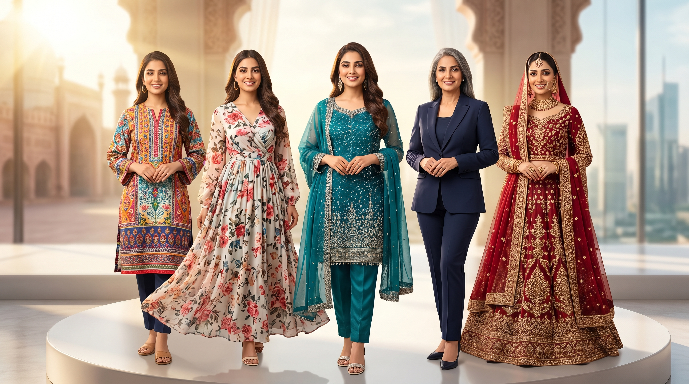

Finding the perfect women dresses in Pakistan has never been easier — whether you are dressing up for a wedding, a casual outing, or a festive celebration, Glam House brings you the most stunning and affordable collection of ladies dresses in Pakistan that suit every taste, occasion, and budget.
Pakistan has a deeply rooted fashion culture, and the demand for quality women dresses in Pakistan continues to grow every year. From traditional hand-embroidered outfits to sleek modern cuts, the variety available today is truly remarkable. At Glam House, we understand that every woman has her own style, which is why our collection of female dress in Pakistan covers everything from everyday casual wear to premium formal options. No matter what you are looking for, you will find it here at prices that make sense.
One of the most exciting trends right now is western dresses in Pakistan. More and more women across the country are embracing western silhouettes — think flowy maxi dresses, fitted bodycon styles, and elegant wrap dresses. These styles blend beautifully with Pakistani aesthetics, giving women a fresh and confident look. Our range of western dresses in Pakistan is carefully curated to ensure the cuts, fabrics, and colors speak to the modern Pakistani woman who wants to look globally stylish while staying culturally comfortable.
When it comes to celebrations and events, nothing beats a great pakistani party wear outfit. Whether it is an engagement ceremony, a birthday party, or a family gathering, the right pakistani party wear can make you the centre of attention. At Glam House, our party collection features rich fabrics like chiffon, organza, and velvet, paired with delicate embellishments that add just the right amount of glamour. If you are searching for standout pakistani party wear dresses, our latest arrivals are updated regularly so you always have something fresh to choose from. We also carry a wide selection of pakistani party outfits that range from semi-formal to fully embellished ensembles.
For the working woman or someone attending a corporate event, formal dresses pakistani styles are a must-have in your wardrobe. Clean lines, neutral tones, and structured silhouettes define the best formal dresses pakistani designs. Our collection includes everything from crisp linen suits to elegant two-piece formals that look polished without being overdone. A well-chosen woman dress pakistani in a formal setting speaks volumes about your confidence and taste. We have made it our mission to offer women pakistan dress options that work just as well in a boardroom as they do at a family dinner.
Dressing in Pakistan is an art form that has evolved significantly over the decades. The concept of dressing in pakistan now blends traditional sensibilities with international fashion trends, resulting in a unique style language that is all our own. At Glam House, we celebrate this evolution by offering a woman dress in pakistan collection that honours both heritage and modernity. From the classic shalwar kameez reinvented in contemporary cuts to fusion pieces that mix eastern and western elements, our range of women clothing pakistan is as diverse as the women who wear it.
Bridal fashion is another area where Pakistani designers truly shine. If you are looking for a bride dress in pakistan, you want something that is breathtaking, memorable, and perfectly crafted. Our bridal range includes luxurious bridal gowns pakistani styles that feature heavy embroidery, mirror work, and intricate detailing. For the big day, a bride wedding dress pakistani needs to strike the perfect balance between tradition and personal expression. Whether you prefer a classic red lehenga or a contemporary ivory gown, our bride dress in pakistan collection has something to make every bride feel extraordinary. We also carry a curated selection of bridal gowns pakistani designers love, offered at accessible price points without compromising on quality.
Shopping for latest dresses pakistan online can sometimes feel overwhelming with so many options available, but at Glam House we make the experience simple and enjoyable. Our website is easy to navigate, our product images are clear and true to colour, and our size guides help you pick the right fit every time. We regularly update our inventory with the latest dresses pakistan trends so you are never behind on fashion. Our team keeps a close eye on runway looks, street style, and social media fashion to bring you designs that feel current and exciting.
For those who love high-end fashion, our designer dresses pakistan section is a treasure trove. Designer dresses pakistan do not have to come with an impossible price tag, and at Glam House we prove exactly that. We work with talented local designers to bring you exclusive pieces that look and feel luxurious without draining your wallet. Every piece in our designer dresses pakistan range is made with attention to detail, quality stitching, and premium fabric selection. These are clothes made to last and to impress.
In conclusion, whether you are after everyday casuals, standout pakistani party wear, elegant formal dresses pakistani cuts, or a show-stopping bride dress in pakistan, Glam House is your one-stop destination for women dresses in pakistan. We are committed to making fashion accessible, enjoyable, and exciting for every woman across the country. Explore our full range of ladies dresses in pakistan, western dresses in pakistan, and women clothing pakistan today and discover why thousands of women trust Glam House for their wardrobe needs. Shop now and enjoy free delivery on your first order — because every woman deserves to look and feel her absolute best.